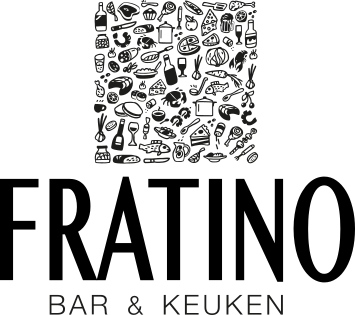
Kies, mix en deel.
Een wijntje na het shoppen, een borrel na het werk of een hele avond gerechtjes uit alle windstreken. Aan de ronde bar op de Bloemenmarkt, midden in Roosendaal.
Donderdag t/m zondag welkom vanaf 17.28 uur
Reserveren mag, maar binnenlopen vinden we ook leuk!
Bar.
Alleen een drankje, borrel na het werk, wijntje na het shoppen, ff een drankje doen in een relaxte setting. Wij serveren heel veel wijnen per glas, speciaal bieren, gin tonics, meer dan 250 whisky's, 'perfect serve' gedistilleerd & cocktails.
Keuken.
Eten? Mag, maar hoeft niet! Maar probeer al die verleidingen maar eens te weerstaan die 'letterlijk' aan je neus voorbij gaan. Dominant aanwezig bij Fratino staat de "Rolls-Royce" onder de fornuizen, ingebouwd in de gezellige ronde bar. Zie, ruik, hoor & proef van de heerlijke gerechtjes die hier vandaan komen.
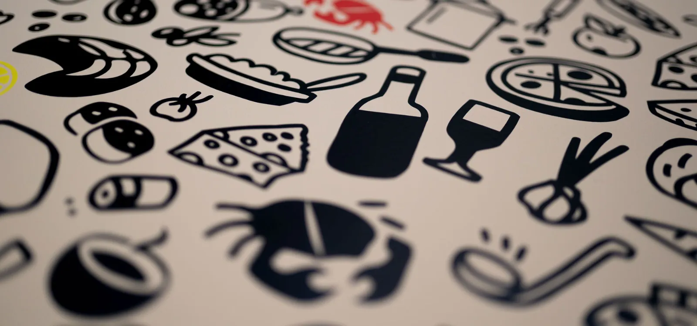
Wat is er te eten?
Wij koken met liefde dagverse, duurzame & biologische gerechten. Kies & mix van de kaart en wij serveren alles op tafel om heerlijk met elkaar te delen (of niet). Kleine gerechtjes vanaf 5,75.
Kies per gezelschap maximaal 4 verschillende gerechten (meerdere van hetzelfde gerecht mag ook), zo kunnen we de kwaliteit waarborgen.
Fratino bol & smeersels V
Vers afgebakken / smeersels / olijfolie
9,75Griekse pita V
Griekse pita / frisse tzatziki
8,75Nacho's Fratino V
Nacho's / tomaat / ui / jalapeño / kaas / guacamole dip
11Kroketjes van kabeljauw
5 stuks / huisgemaakt
9,75Samosa curry massala V
9 stuks / vegalekker / pittig hapje / yoghurt-mangodip
9,75Kokosthai bitterbal GV LV
Per stuk / Thaise kokoscurry / doperwt / vega-lekkerrr
1,39Bitterbal(len)
Ook per stuk / mosterd / portie is (on)officieel 8 stuks
1,39Karaage からあげふりかけ
Malse kipstukjes / sticky Japanse saus / furikake
9,75Charcuterie plank
Lokale & interlokale charcuterie / op 'n plank / klein of groot
19,75 / 35
Kalfsucade "de favoriet van Maurice" GV
Mals langzaam gegaard kalfsvlees / try before you die
19,75Gerookte zalmbonbon GV LV
Daar istie / befaamd & geroemd / ultieme Fratino klassieker / salade / citroen
9,75Shrimp pie green pesto
Huisgemaakt / knapperig jasje
9,75Gamba's in een pannetje
5 gamba's / bruisende kruidenboter / in een pannetje
15,-Gyoza dimsum garnalen
4 Japanse dimsum / spicy dip / stokjes erbij?
12,75Ravioli met gorgonzola en walnoot V
Italiaanse ravioli / gevuld / gorgonzola en walnoot
15,-Indische kipspiezen met saus kacang
2 stuks / biologische kip / op een spies / pindasaus
15,-Pizza "pan" V
Lekker dippen / tomaat / groentjes / mozzarella
16,75Toffe sateh met sesamsaus V
Mild pittig / 2x tofu op een stokje / rijst / groentjes / sesamsaus
15,-Jambalaya, terug van weggeweest GV LV
New Orleans style / kip / rijst / cajun / chorizo & more
15,-F.F.B.
2x Angus beefburgertjes / cheddar / op een broodje / burgersaus
15,-
Loaded frites V
Overladen verse friet / met wisselende topping / kwak mayonaise erbij
14,75Mandje "frites" V GV LV
Zelfde topfriet / in een mandje / en ook kwak mayo
5,75Cauli wings Korean V
Bloemkool / Korean sticky saus / mild pittig
9,75
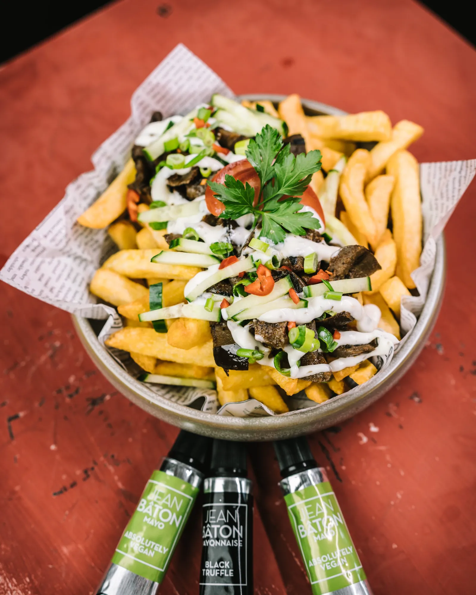
Chocolade noten karameltaart V
Whoehoe / van "Jet's andere koek"
7,75Toetje van de week V
Buiten je tafelgenoot ;) hebben wij een toetje van de week / vraag er naar
7,75Kaasplank V (GV)
3 kaasjes / lokaal & interlokaal / happy Esther (is gek op kaas)
16,-
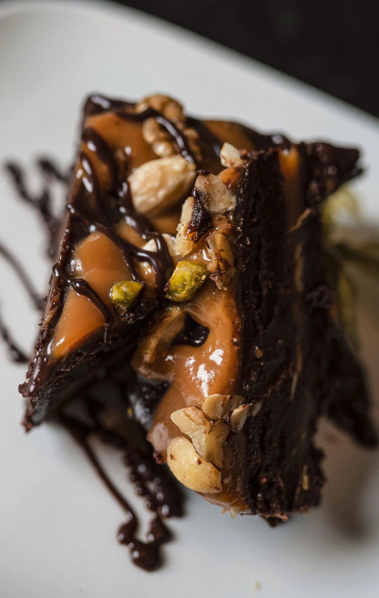
V vegetarisch GV glutenvrij LV lactosevrij
Van het krijtbord
Elke week hebben wij buiten de kaart om diverse gerechten van het seizoen. Dit krijtbord wisselt wekelijks; vraag aan de bar wat er nu op staat.
Fratino's specials (voorbeeld)
- edamame beans met sesam & rode pepers8,75
- Oosterse garnalenkroketjes & chilidip (7 st)12,75
- salade met warme geitenkaas, appel & walnoten12,75
- herfst-stoverij van rund & bospaddestoelen15,-
- huisgemaakte eenden-paté & pruimenchutney9,75
- taartje warm gerookte zalm, appel & herfstdressing13,75
- "loaded" verse friet met kip gyros & tzatziki14,75
wisselt wekelijks
Wat is er te drinken?
Wist je dat we meer dan 250 verschillende malt whisky's hebben? En daar staan ook hele zeldzame bij!
Tapbieren
Altijd 3 seizoensbieren vers van de tap.
Speciaalbieren per fles
Altijd meer dan 25 speciaalbieren op fles & seizoensbieren.
Topwijntjes per glas
Wisselende wereldse wijnen per glas. Esther adviseert je graag.
"Perfect serve" cocktails & longdrinks
Gemaakt met de beste frisdranken, gedistilleerd & ingrediënten.
De beste gins uit alle windstreken
Van Tanqueray tot Osmoz, Hendrick's & Mataroa uit Griekenland.
Schotse malt whisky's
Meer dan 250 verschillende, ook hele zeldzame.
Speciale koffie's
Van de beste Irish coffee in town tot een latte macchiato.
Alcoholvrij & frisdranken
Verrassende dranken zoals premium cola's, Fritz, Urb, Fentimans & meer.
Seizoensbiertjes, wijnen & meer vind je op ons krijtbord.
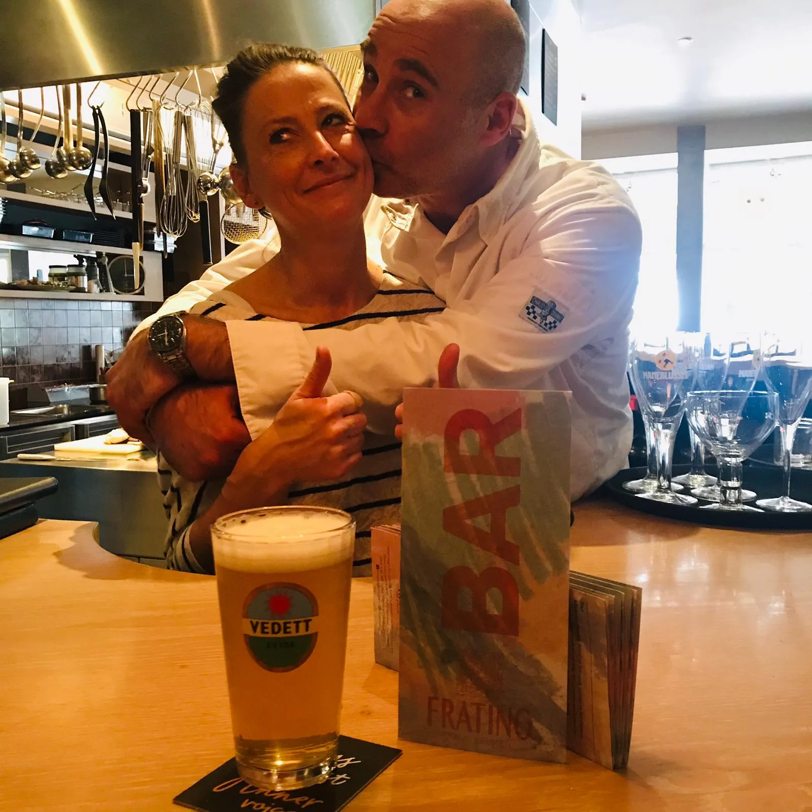
Esther & Maurice
Esther & Maurice zijn al sinds jaar en dag werkzaam in de horeca en heten jullie van harte welkom bij Fratino.
Esther zal jullie kunnen adviseren in de vele "open wijnen" die per glas geserveerd worden. Ook bij het grote assortiment gedistilleerd, whisky's en speciaal bieren kan ze jullie helpen de keuze te maken.
Maurice kan jullie voorzien van allerlei heerlijke gerechten die je samen kan delen. Geïnspireerd door keukens uit alle windstreken staat hij garant voor verrassende en eerlijke smaken. Van bitterbal tot runderhaas en vegetarische verrassingen.
Iets te vieren?
Bedrijfsdiner, een borrel op een andere manier, een verjaardag of een andere gelegenheid? Ook dit kunnen wij tot in de perfectie verzorgen. Van 20 gangen diner tot lekker bieren met bitterballen.
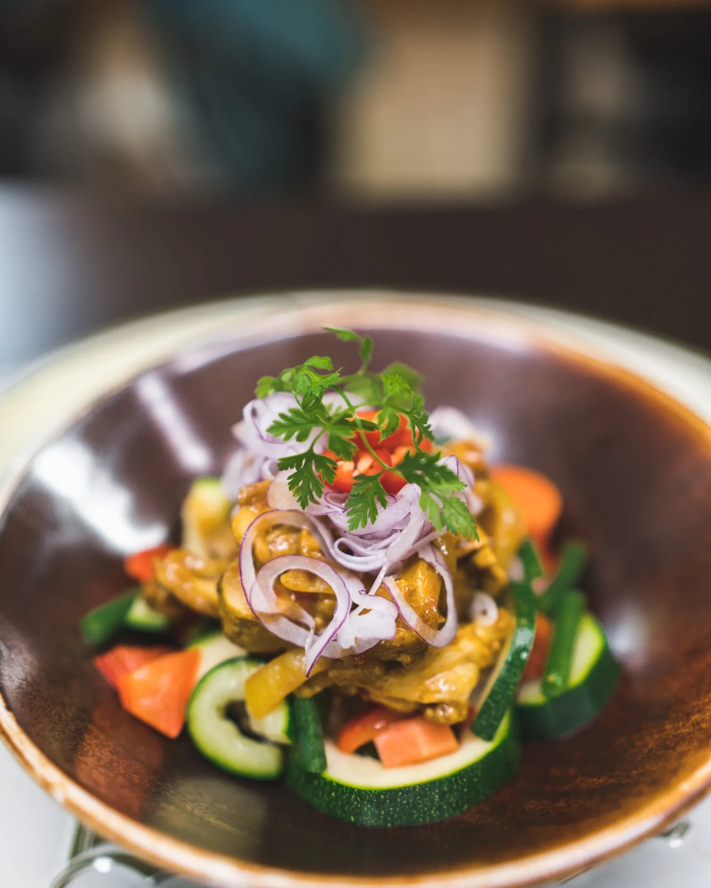
Sfeerimpressie
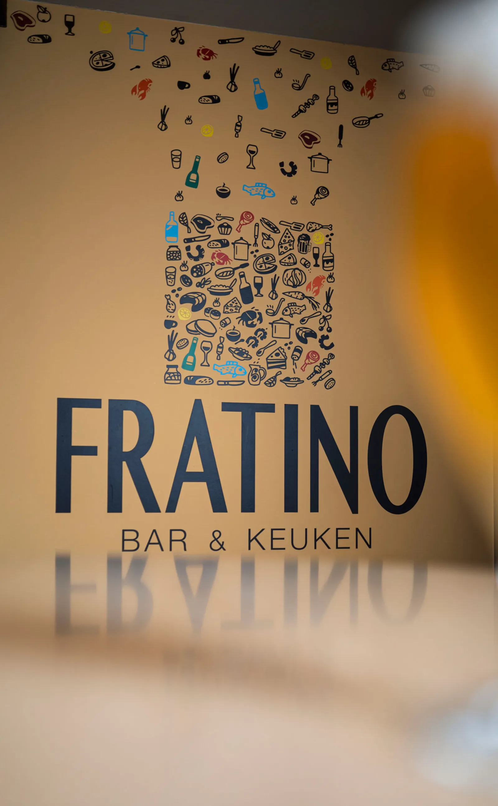
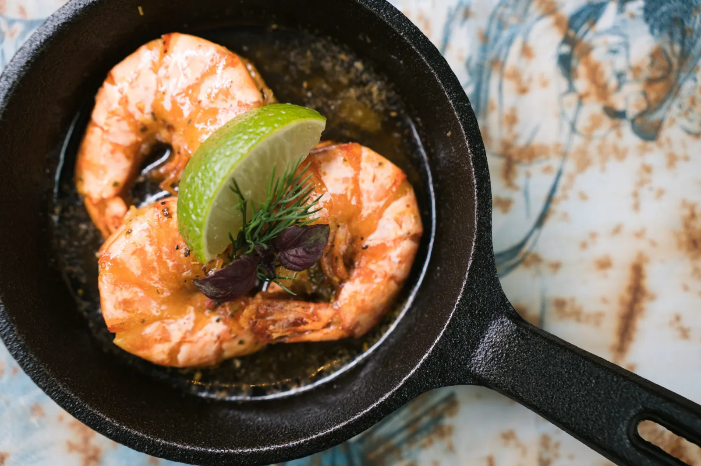
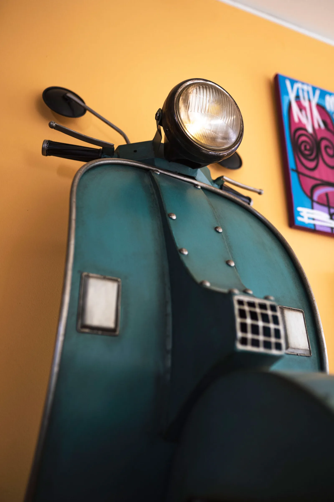
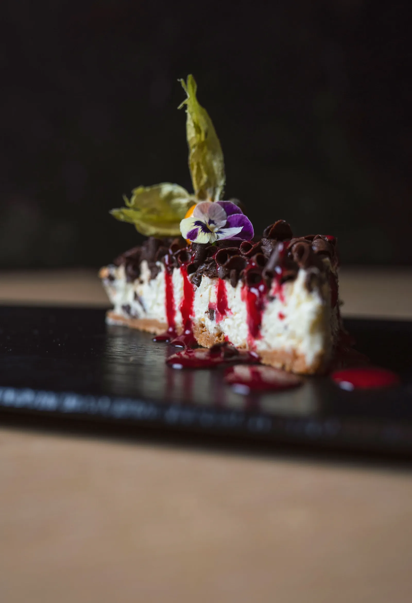
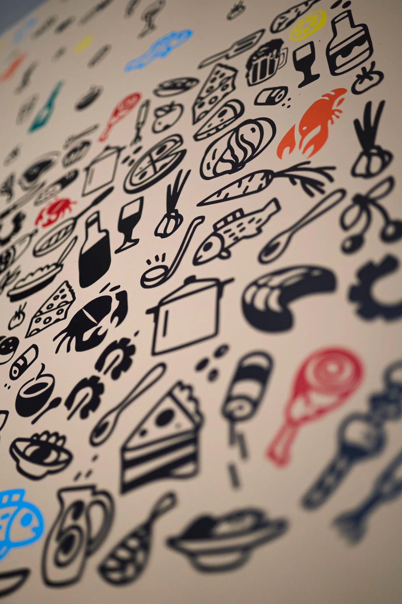
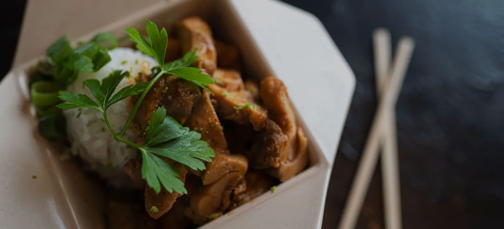
Waar moet je zijn?
Bloemenmarkt 1
4701 JA Roosendaal
Centraal gelegen in het hart van Roosendaal.
Openingstijden
- Donderdag t/m zondag
- vanaf 17.28 uur tot ……
- Keuken
- 17.29 tot 21.31 uur
Reserveren?
Reserveren mag, gewoon binnenlopen is ook leuk. Reserveringen telefonisch of via de mail.